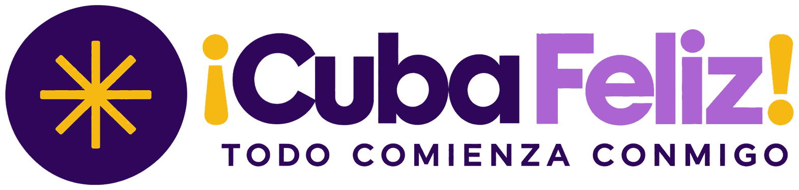

Tu Meditación Andante
de Camina por Cuba
Una meditación caminando de aproximadamente 44 minutos. Descárgala con anticipación, pruébala y prepara tus audífonos.
14 de noviembre de 2026 · 10:00 a. m. (hora de Cuba) Descargar la meditaciónArchivo de audio MP3 · se guarda en tu teléfono o computadora
¿Prefieres escucharla ahora?
Dale play aquí mismo, sin descargar nada:
Cómo descargarla paso a paso
📱 En iPhone o iPad
- Abre esta página con Safari.
- Toca el botón «Descargar la meditación».
- Si aparece un aviso, toca «Descargar».
- La encontrarás en la app Archivos → Descargas.
🤖 En Android
- Toca el botón «Descargar la meditación».
- Espera el aviso de descarga completada en la parte de arriba.
- La encontrarás en la app Archivos (o Mis archivos) → Descargas.
💻 En computadora
- Haz clic en el botón «Descargar la meditación».
- El archivo se guarda en tu carpeta Descargas.
- Pásalo a tu teléfono si vas a caminar con él.
Antes del 14 de noviembre
- Descarga el audio con anticipación y pruébalo.
- Prepara tus audífonos.
- Así podrás escucharla aunque no tengas internet durante la caminata.
¡Caminamos juntos por Cuba!
Con cariño, el equipo de ¡Cuba Feliz!
El amor que cultivamos se convierte en el mundo que compartimos